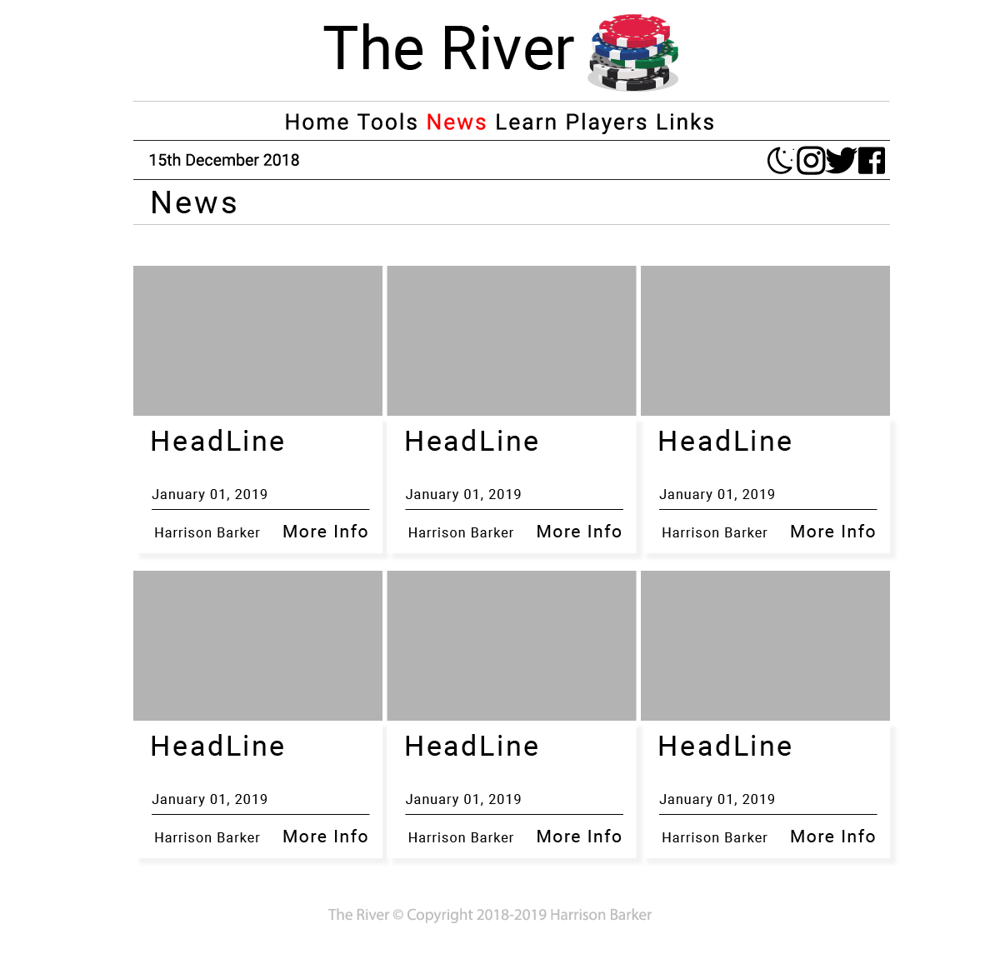

Report - Link to site
By Harrison Barker
Introduction
I have chosen to create a site around a personal hobby and passion which is the world and community of poker specifically "Texas Hold'em" where members of the community and go to find out about their favorite players, the latest poker news, learn how to play the game and use site tools to better their playing experience.
Inspirations
- The Washington Post - A Lot of my sites layout and feel is inspired by not only the washington post’s site but most traditional newspapers sites as they all share a collective “theme” which provide a high level of readability as their derived from traditional paper news.
- PokerNews - is a news site dedicated to poker and is the standard and "goto" for many community members.
- Minimalism - has inspired my sites design greatly as I’ve tried to produce a layout and colour palette which has the least amount of clutter and unnecessary features.
Accessibility
- Alt text - Alt tags provide a text description for an image, this allows for search engines to use these descriptions for finding images inside websites. Alt tags can also make a site more accessible by allowing visually impaired users to understand the site.
- Clear design - By having a clear and concise design a multitude of users will be able to navigate and understand the site with ease therefore increasing accessibility.
- Defined and obvious colour palette - By integrating the colour scheme with the functionality of the site users can easily and quickly see what an object's purpose is. Having a reduced colour palette will increase accessibility as the contrast between the colours can be greater and more defined with less more contrasting colours.
Useability
- Responsiveness - By having a fully responsive site users can use it on whatever device they want and get the same level of experience on all of them. This makes my site extremely usable.
- Clear and easy navigation - To make my site more usable I’ve implemented a nav bar which show what state the site in using colour.
- Legibility - As my site has taken inspiration from traditionally newspapers readability and legibility have been key design focuses, to achieve this I’ve chosen a font which is clear and easy on the eye and to read. I’ve also tried to keep this type clearly spaced from one another whilst also containing it.
Research
- Handlebars js templating - For the learn, players and news pages I used templates to create html which where then added to the page based on an external JSON file. To do this I had to reference the handlebars js website to learn how to create templates and how to iterate the template based on an array using the “{{each}}” and “{{if}}” command.
- Bootstrap reference - The bootstrap reference details all the elements in the bootstrap library, their purpose and how to use them in context. I used this reference to create the layout for the site using bootstrap elements and the 12 column grid system which allows for responsive design.
- Sass reference - I used a combination of the official Sass documentation for general syntax and logic, also searches on how to load different themes into the style sheet when needed.
Successes
-
Design & Responsiveness -
I believe that the design of my site is extremely readable as it draws a lot from traditional
printed newspapers this provides a very pleasant user experience and delivers information in
clear and concise manner.
I also believe that a key focus and execution of a responsive layout allows the user to easily read and understand the content of the site on whatever device it is displayed on. This was achieved through the use of the bootstrap grid system which is completely designed around being responsive. -
Theming & colour palette -
My site features two different colour sets or themes: a light and dark. By having two different
ways of viewing the site the user gets to choose the way they experience and read the site
based on their preference.
By using a reduced colour pallette my site is clear and not overly distracting, i've used colour to point the users attention towards areas of importance and to navigate them through the site. - Templating - Effective use of templating - I’ve used templating in my site whenever repetitive HTML occurs to make a more pleasant development and maintenance of my site as I only have to mantine one piece of HTML instead of the same but with different data.
Improvments
- Extra pages - I would have liked to included a tournaments page which would talk about the current and upcoming tournaments, who's playing, prizes and possibly odds based on number of previous wins.
-
Extra tools -
I would have liked to create more tools for the site, one in particular would be an hand rank
app which would take your current cards and community cards and calculate the rank of your
current hand.
Another would be an odds counter which would calculate your chances of winning the current hand based on your cards and the community cards. - Design cohesion - I don’t think that all the pages follow the same design pattern completely, especially the links page as it doesn't quite fit the design of the site. I also think that the home page is lacking in content and could have more to captivate the user.
Resources
- Bootstrap - is an open-source web framework used to create responsive web sites using CSS and jQuery to structure and style a site.
- Handlebars js - is a semantic templating javascript library which allows the user to create templates and populate those templates with necessary data using javascript.
- jQuery - is a javascript library which is made to simplify DOM manipulation, DOM traversal, event handling, animation and async apps.
- Sass (Syntactically awesome style sheets) - is a style sheet language which is used to create a more powerful and easier to read style sheet, Sass is a preprocessor scripting language which is compiled into conventional CSS for use on a web page.
- Moment js - is a lightweight JavaScript date library for parsing, validating, manipulating, and formatting dates.
Appendices
Site Map
Wireframes


Mockups
